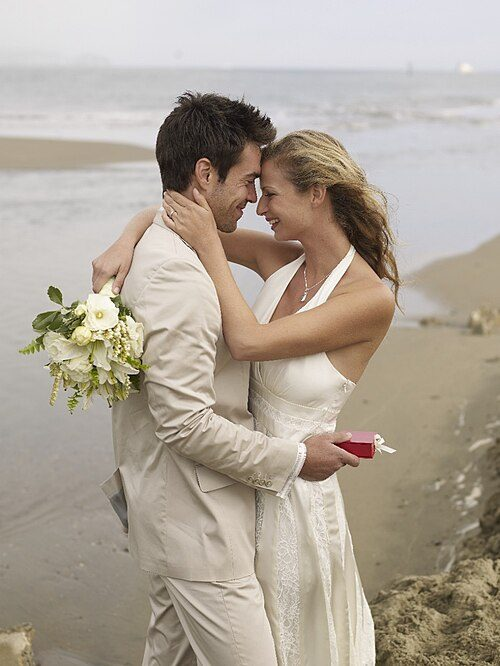
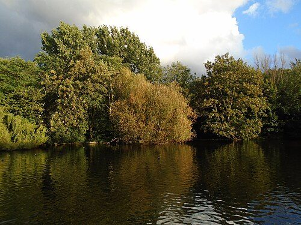

Part 2
Vocabulary and listening
Prepositions of movement · A radio phone-in
1. Match the prepositions with the pictures. Click a word, then click its picture. Listen (3.06), check and repeat.
across
along
between
down
into
off
out of
over
past
through
under
up
2. Choose the correct prepositions. Then listen (3.07) and check.
1. Be careful! Don't fall … the stairs. (example)
2. Who is that coming … Bruno's house? Is it Carla?
3. Let's jump … the water together! Are you ready?
4. Don't cross the road … those cars. It's dangerous.
5. Why don't we swim … the lake to the other side? It isn't far.
6. Laura walked … me without saying hello.
3. Use it! Write about your journey to school today using the prepositions in Exercise 1. Then tell your teacher.
First, I went out of my house. Then I walked along the road and over the bridge.
0 words
A radio phone-in
Using your knowledge
Before you listen, think about what you already know on the topic and words you might hear.
4. Look at the photos and think about words you might hear.


5. Listen to Melissa's story (3.08). How many of your words in Exercise 4 do you hear?
Words I heard:
6. Listen again and put the events in the correct order.
7. Close the page. Take turns with your teacher to tell the story. Can you remember the events in order?


.jpg){kind=link}


.jpg){kind=link}
.jpg){kind=link}